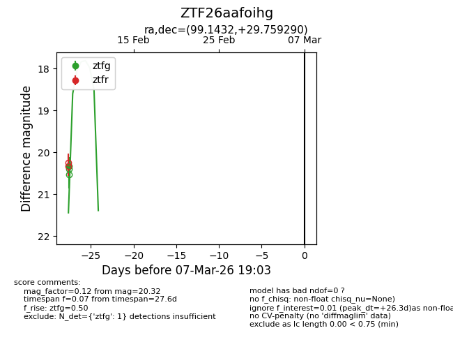
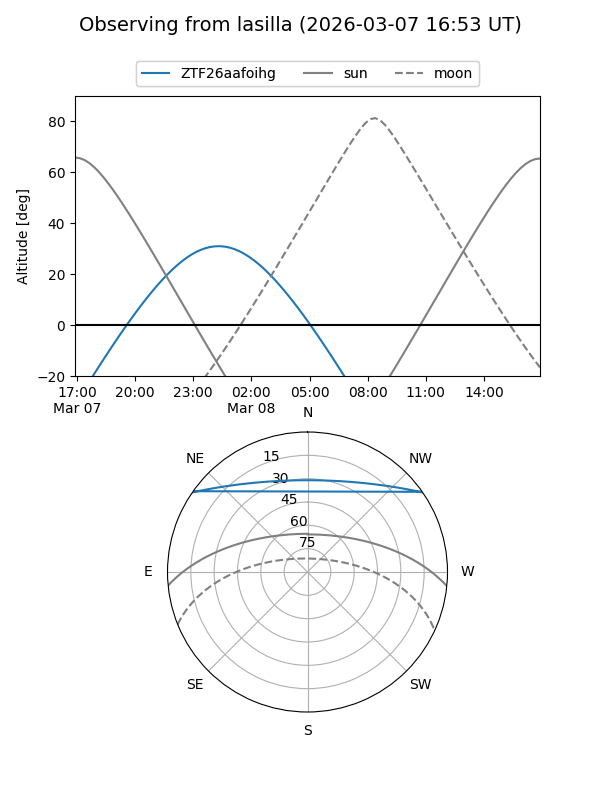
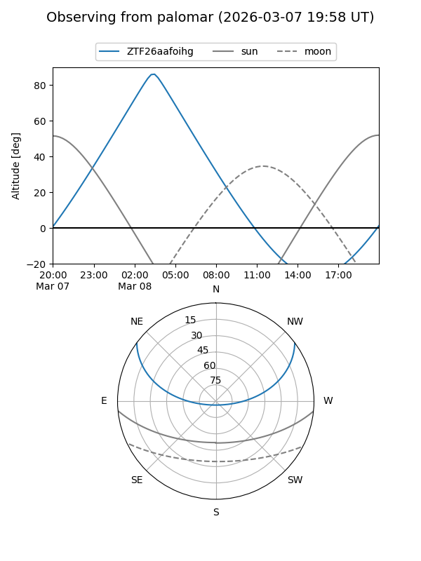
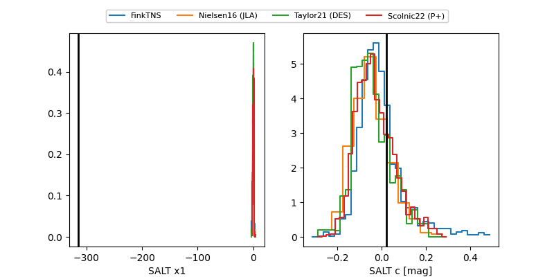

ZTF26aafoihg
Target ZTF26aafoihg at 2026-03-07 19:05
Aliases and brokers:
FINK: link
Lasair: link
ALeRCE: link
alt names
ZTF26aafoihg (ztf,fink_ztf)
Coordinates:
equatorial (ra, dec) = 99.1432,+29.75929
equatorial (HMS+DMS) = 06:36:34.38,+29:45:33.44
galactic (l, b) = (184.5828,+10.15163)
Flags:
Photometry:
last ztfg=20.32
1 ztfg detections
Lightcurve

Visibility


Additional plots
